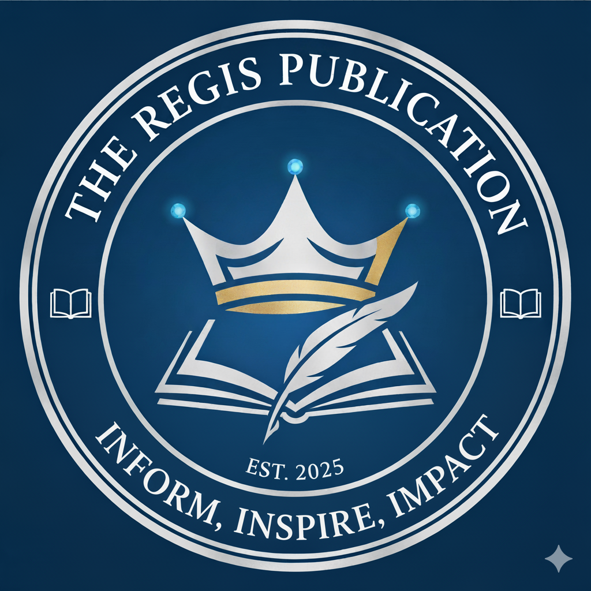

The Regis Publication
THE JHS STUDENTS OF SHS-ADC FIND THEIR CLUBS FOR S.Y. 2025-2025
The REGIS Publication, Amber Boukema
The Junior High School students of Sacred Heart School-Ateneo de Cebu had their Club Fair last month, August 7, 2025, at the Magis Eagles Arena, for students to decide their clubs for school year 2025-2026 by having a presentation of the different clubs and organizations open.
The club fair began with a parade of the different organizations in the school. The Junior High School Vice Principal of Formation, Mrs. Edgermi G. Gingoyon then gave a brief speech highlighting the importance of joining clubs and organizations to help us become people with character. After the speech, administrators opened registration forms on a first-come, first-served basis, and students quickly signed up for their preferred organizations. The students were visibly excited and eager, rushing to secure spots in their desired clubs. Throughout the event, performance-based organizations namely GLEE Intrumento, GLEE Voice, Blue TAG, Bahandi Folkloric Ensemble, and ABDT performed to showcase their talents to the students and promote their organization to them so that they could also join if they are interested. The Club Fair aimed to encourage student involvement and foster a sense of community with one another.
The event concluded with a closing prayer, followed by the singing of the school hymn Lux Oriens. The student emcees then gave a brief farewell to the students, bringing the club fair to a close. With many students eager to join, the fair set a positive tone for the upcoming academic year.
The Editorial Staff - Amber Boukema, Charles Busa, Rizabela Uy, and Robert Rivera
INFORM, INSPIRE, IMPACT